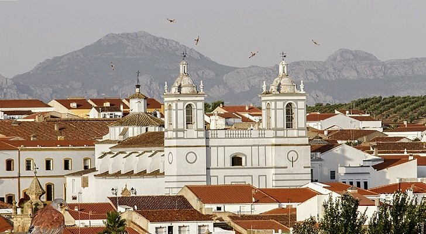
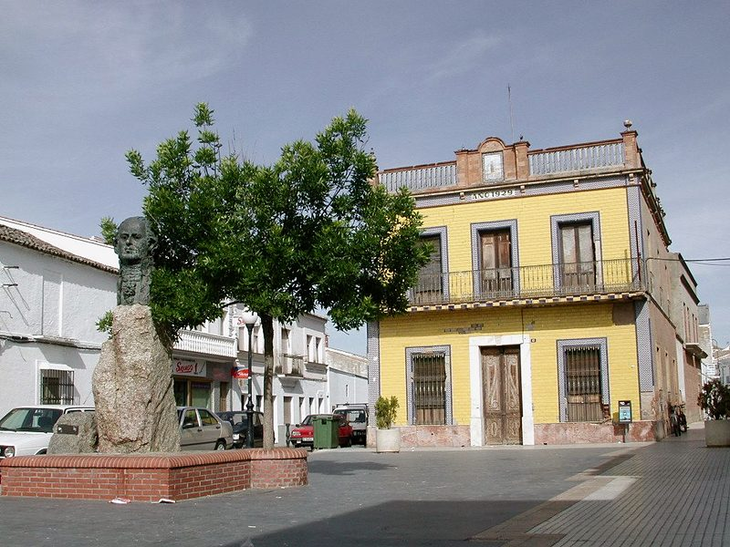
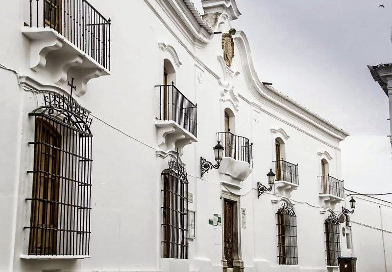
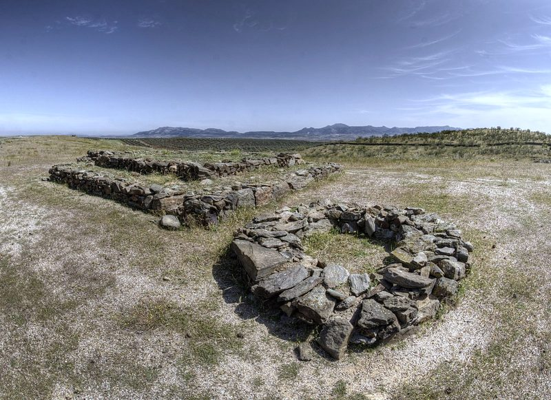
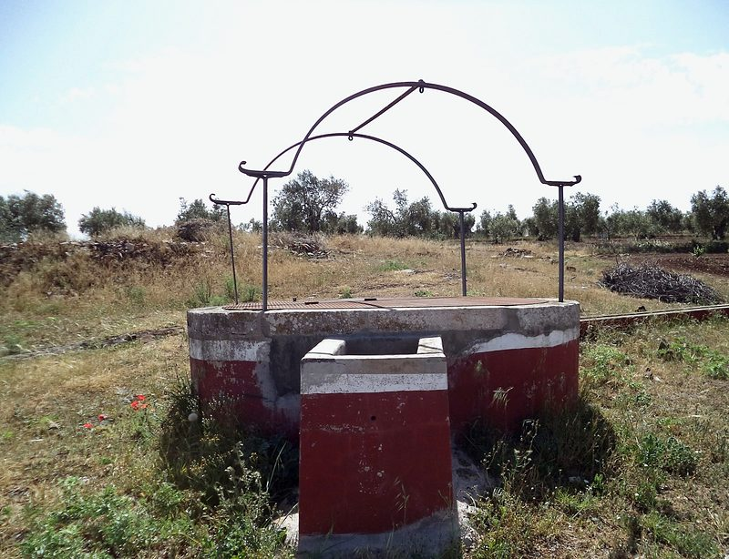
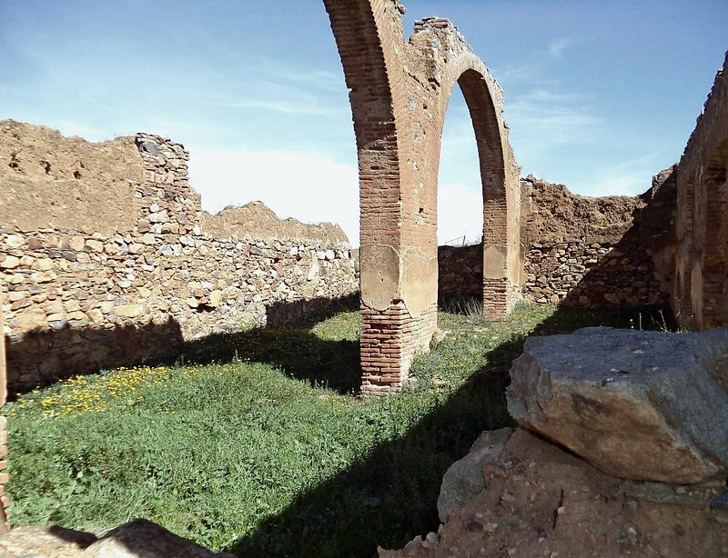
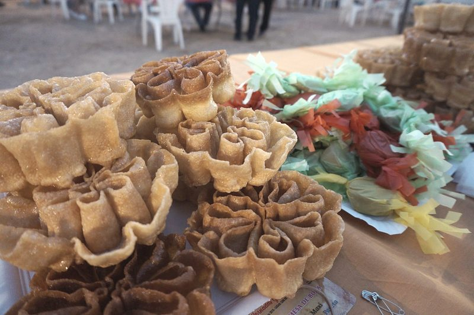

El pueblo
Un pueblo encalado de Tierra de Barros, con una iglesia de dos torres, un poblado prerromano en lo alto de un cerro y un poeta de la Ilustración.

Qué ver
-

Monumento a Meléndez Valdés
El poeta de la Ilustración nació en la calle Larga en 1754. Su busto de bronce es de 1985.
Foto: F. Enrique Suárez · CC BY-SA 3.0
-

Casa de Vargas-Zúñiga
Casa-palacio de los siglos XVII y XVIII, hoy Casa de la Cultura y biblioteca.
Foto: web del Ayuntamiento
-

Oppidum de Hornachuelos
Poblado fortificado prerromano de unas cinco hectáreas, con centro de interpretación en la Casa de la Cultura.
Foto: Ángel M. Felicísimo · CC BY 2.0
-

Los pozos rojos y blancos
Los pozos del término se pintan de rojo el cuerpo y de blanco el brocal.
Foto: Diegui57 · CC BY 4.0
-

Lavadero de lanas
Las ruinas de sus arcos, junto al arroyo Valdemedel.
Foto: Diegui57 · CC BY-SA 4.0
-
Iglesia de Nuestra Señora de Gracia
Dos torres gemelas, un retablo barroco y un púlpito de mármol de Estremoz. En sus tejados anida el cernícalo primilla.
Foto: cartel de DEMA y la Junta de Extremadura (2014), web del Ayuntamiento
El término en un mapa
Lugares del mapa
- Iglesia de Nuestra Señora de Gracia
- Casa de Vargas-Zúñiga
- Ermita del Cristo de la Misericordia
- Ermita de la Aurora
- Ermita de San Juan Macías
- Palacio de Quintanilla
- Pozo de San Juan Macías
Cómo leerlo
- Límite del término municipal (línea discontinua)
- El pueblo (área sombreada)
- Carreteras (línea gruesa): BA-013, BA-121, BA-122, BA-131, EX-212, EX-334 y EX-342
- Círculo con número: un lugar de la lista
- Escala: la barra de abajo mide 5 km
- Recuadro: el pueblo ampliado; su barra mide 250 m
- Raya fina con un punto: el sitio exacto, cuando el número se ha apartado para que se lea
La casa del poeta
En esta casa que ves nació el poeta admirable Don Juan Meléndez Valdés
Juan Meléndez Valdés (1754-1817), poeta y magistrado de la Ilustración, nació en esta calle. El busto de bronce del pueblo es de 1985, obra de Luis Martínez Giraldo.
Historia
En el Oppidum de Hornachuelos, probablemente la Fornacis de Ptolomeo, ya vivía gente en la Edad del Cobre, y su mejor época fue entre el siglo II antes de Cristo y el I después de Cristo.
La Orden de Santiago repobló la villa en el siglo XIII y llegó a ser cabeza de Encomienda; la primera referencia escrita es de 1257. Según la tradición, el nombre viene de un gran fresno a orillas del arroyo Valdemedel.
El casco se rehízo en los siglos XVII y XVIII: casas encaladas con rejas negras y casonas barrocas con blasones. El Ayuntamiento ocupa el antiguo convento de Jesús y María, de las clarisas, fundado en 1535.
Patrimonio
Iglesia y ermitas
- Iglesia de Nuestra Señora de GraciaDel siglo XIII-XIV, reedificada en 1745 y 1859. Dos torres gemelas, un retablo barroco de Alonso Rodríguez Lucas y un púlpito de mármol de Estremoz. C/ Iglesia, 2.
- Ermita del Cristo de la MisericordiaDel siglo XVIII, con atrio, arcada lateral y torre. Guarda la imagen del Cristo, que la tradición atribuye a Pedro Roldán.
- Ermita de la AuroraEn la calle Meléndez Valdés. Conserva la sillería de los Trece de la Orden de Santiago y piedras visigodas en el umbral.
- Ermita del Cristo ViejoDel siglo XVI, hoy en ruinas, con cúpula y una torre de remate bulboso.
- Ermita de San Juan MacíasLevantada en 1985 en la casa natal del santo.
- Ermita de San IsidroDe 1998, a unos 4 km del pueblo.
Casas, palacios y monumentos
- Casa natal de Juan Meléndez ValdésEn la calle Larga, con la placa que recuerda al poeta.
- Monumento a Meléndez ValdésBusto de bronce de 1985, obra del escultor pacense Luis Martínez Giraldo.
- Casa de Vargas-ZúñigaCasa-palacio de los siglos XVII y XVIII, con balcón, escudo con venera y rejas con la cruz de Santiago. Hoy es la Casa de la Cultura.
- Palacio de QuintanillaEn la calle Ayuntamiento, con fachada barroca.
- Casa de BazoCon un balcón bajo bóveda de venera.
- Casas de los Olea y de los GrajeraCasas de esquina con blasones, de los siglos XVII y XVIII.
- Antiguo convento de Jesús y MaríaConvento de clarisas fundado en 1535. Hoy es el Ayuntamiento.
Arqueología y campo
- Oppidum de HornachuelosPoblado fortificado prerromano de unas cinco hectáreas, excavado entre 1986 y 1997. Tiene centro de interpretación en la Casa de la Cultura.
- Pozo de San Juan MacíasEn la finca del Valle Garzón, a unos 4 km: el lugar del primer milagro del santo.
- Pilar del CañoPilar tradicional, a las afueras del pueblo.
- Los pozos rojos y blancosLos pozos del término se pintan de rojo el cuerpo y de blanco el brocal.
- Ruinas del lavadero de lanasArcos de ladrillo junto al arroyo Valdemedel.
Fiestas
Enero
Sin fiestas señaladas
Febrero
- Jueves de CompadresDos jueves antes del Miércoles de Ceniza
- Muestra de Vinos de Pitarra y MatanzaFinales de febrero
Marzo
- Carnaval y Semana SantaFecha variable
Abril
Sin fiestas señaladas
Mayo
- San Isidro15 de mayo
Junio
Sin fiestas señaladas
Julio
- Festival Folklórico Internacional de la Baja ExtremaduraTercer fin de semana de julio
Agosto
- Festival de Teatro «Meléndez Valdés»En verano
- Jornadas Gastronómicas y ArtesanalesPrimer fin de semana de agosto
- Fiestas del Emigrante15 de agosto
Septiembre
- Día de Extremadura8 de septiembre
- Ferias y Fiestas del Cristo de la Misericordia Fiesta mayorDesde el 14 de septiembre, cuatro días
- Romería al Pozo de San Juan MacíasEl domingo después de las fiestas del Cristo
Octubre Este mes
Sin fiestas señaladas.
Lo siguiente: FEAVIR, Feria Avícola, noviembre
Noviembre
- FEAVIR, Feria AvícolaSegunda semana de noviembre
Diciembre
Sin fiestas señaladas
Gastronomía
Platos
- Gazpacho
- Bacalao en cantina
- Escabeche
- Caldereta de cordero
- Pescadilla
- Tapas de guarrino
- Migas
- Garbanzos con romazas
- Repápalos de leche
Dulces
- Roscas de candil
- Flores
- Prestines
- Tirabuzones
- Perrunillas
- Bollos de Pascua
- Coquillos
- Hijuelas
- Torrijas
Para beber
- Vino de pitarra
- Resóleo
- Vino y aceite de oliva virgen extra de la tierra

Personajes
Juan Meléndez Valdés
1754-1817
Poeta y magistrado de la Ilustración. Nació en la calle Larga.
San Juan Macías
1585-1645
Dominico en Lima, canonizado en 1975. Su casa natal es hoy una ermita.
Alonso García Bravo
h. 1490-1561
Alarife de Hernán Cortés: trazó la primera planta de la Ciudad de México.
José María Chacón Pachón
siglo XIX
Diputado en la I República.
Rutas
Ruta al Cerro de Hornachuelos
Por el camino de Peñas del Agua hasta la Cañada Real Leonesa; vistas a 5-6 pueblos y al embalse de Los Molinos
Ruta al Pozo de San Juan Macías
Desde la plaza de España por la C/ Sevilla; unos 4 km; vuelta por la Vereda de la Tía Juana
Ruta al Cortijo de Siete Iglesias
Cortijo del s. XVIII del Marqués de Siete Iglesias, en la Cañada Real Leonesa
Ruta al Cortijo de Quintana
Cortijo de principios del s. XX con almazara y bodega
Ruta a la Bodega y Cortijo de Peñaovejera
Bodega histórica; asentamientos visigodos y romanos cerca
Ruta al Punto de Mira de Las Cabezas
Cerro con vistas a 6 pueblos y un asentamiento romano
Ruta al Cortijo Bonito
Pasa por Los Pilones (zona de recreo en el arroyo Valdemedel); avutardas y grullas
Créditos de las fotos
- Casa de la Cultura: web del Ayuntamiento. Solo para la propuesta: hace falta su autorización para publicarla
- Avenida con torre (portada): web del Ayuntamiento. Solo para la propuesta: hace falta su autorización para publicarla
- Monumento a Meléndez Valdés: F. Enrique Suárez, CC BY-SA 3.0 (ficha de la foto)
- Pozo de «La Tinajona»: Diegui57, CC BY 4.0 (ficha de la foto)
- Las dos torres de la iglesia: cartel de DEMA y la Junta de Extremadura (2014), web del Ayuntamiento. Solo para la propuesta: hace falta su autorización para publicarla
- Oppidum de Hornachuelos: Ángel M. Felicísimo, CC BY 2.0 (ficha de la foto)
- Ruinas del lavadero de lanas: Diegui57, CC BY-SA 4.0 (ficha de la foto)
- Dulces típicos: web del Ayuntamiento. Solo para la propuesta: hace falta su autorización para publicarla


.jpg){kind=link}